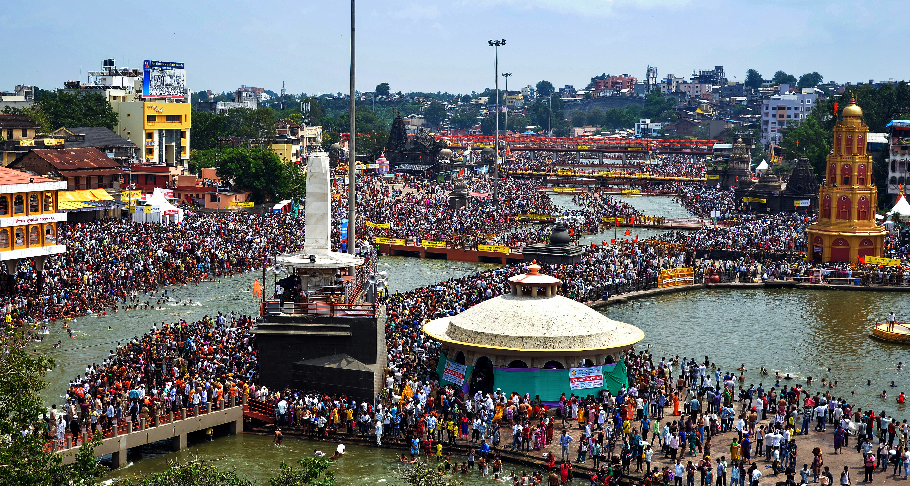

Understanding the world's largest sacred gathering and its deep spiritual significance
Kumbh Mela is the largest religious gathering in the world, held every 3 years in rotation at four sacred cities — Prayagraj, Haridwar, Ujjain, and Nashik. At each location, it occurs once every 12 years, and the full cycle (Purna Kumbh) at Prayagraj happens every 12 years as well.
Nashik's Kumbh, known as Simhastha (occurring when Jupiter is in Leo), is hosted at the banks of the sacred Godavari river — the spiritual lifeline of the Deccan. Together with nearby Trimbakeshwar, it forms the heart of this sacred event.

Nashik & Trimbakeshwar, Maharashtra. Ram Kund on the Godavari is the primary bathing ghat.
Simhastha Kumbh at Nashik occurs once every 12 years, when Jupiter (Brihaspati) enters Leo (Simha Rashi).
Expected attendance: 30+ million pilgrims over 45 days, making it one of the largest human gatherings.
A holy dip in the Godavari during Kumbh is believed to liberate 88 generations of one's ancestors.
The Kumbh tradition originates from the Samudra Manthan (churning of the cosmic ocean). When Amrita (nectar) emerged, gods and demons fought for 12 divine days (12 human years). Drops fell at Nashik, sanctifying the Godavari forever.
Nashik is where Lord Rama, Sita, and Lakshmana spent time during their 14-year exile. Ram Kund is where Rama bathed; Sita Gund is where Sita performed rituals, making these ghats eternally sacred.
The 13 major Akharas — monastic orders of warrior-saints — formalized their Shahi Snan (royal procession bathing) order, a tradition still meticulously followed today.
The 2015 Nashik-Trimbakeshwar Kumbh saw over 37.5 million pilgrims over 45 days, with massive digital infrastructure deployed for the first time.
The 2027 Simhastha Kumbh promises to be the most organized yet, with digital pilgrim services, enhanced medical facilities, smart crowd management, and this very portal to assist pilgrims.